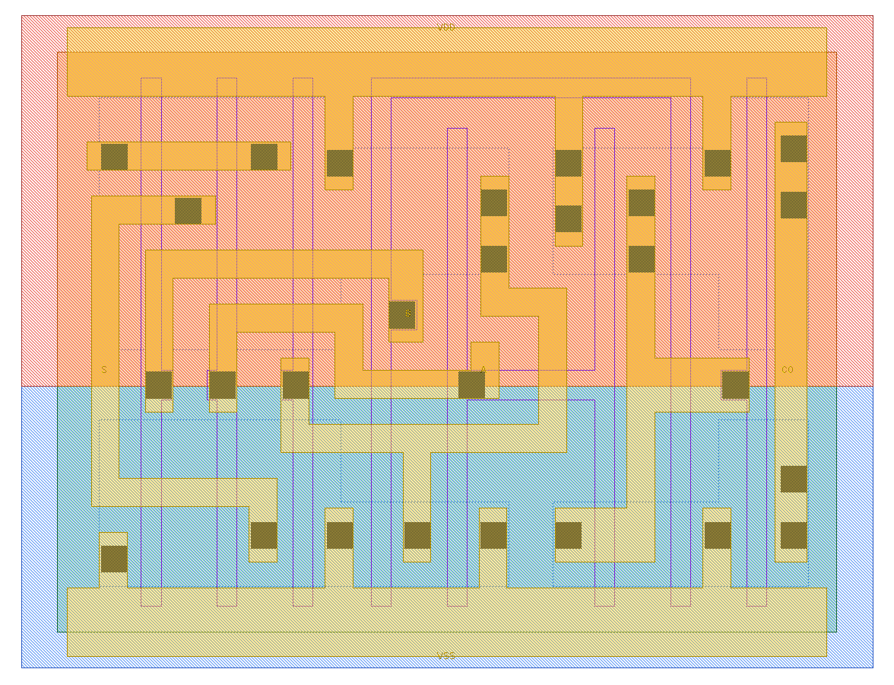
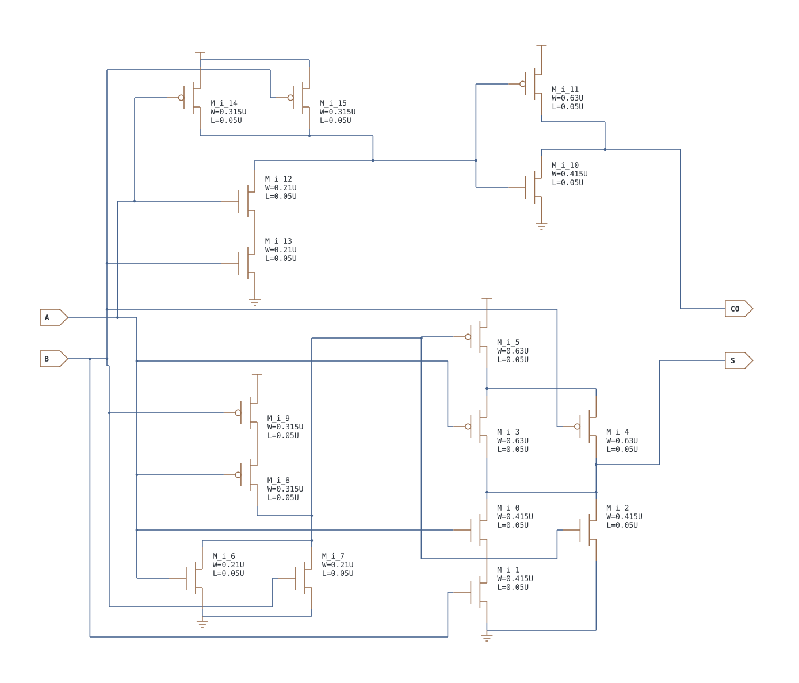
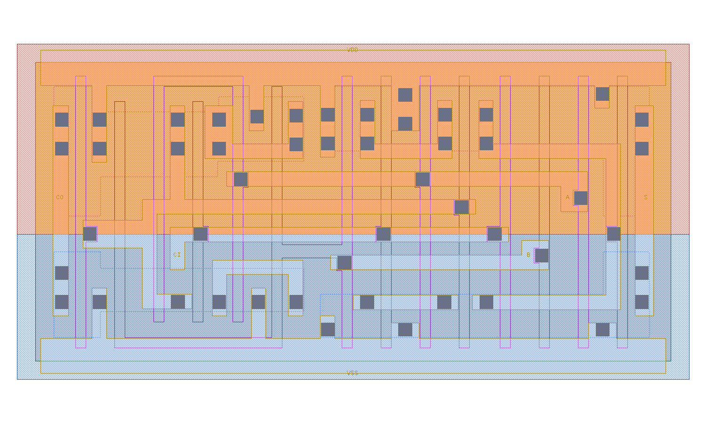
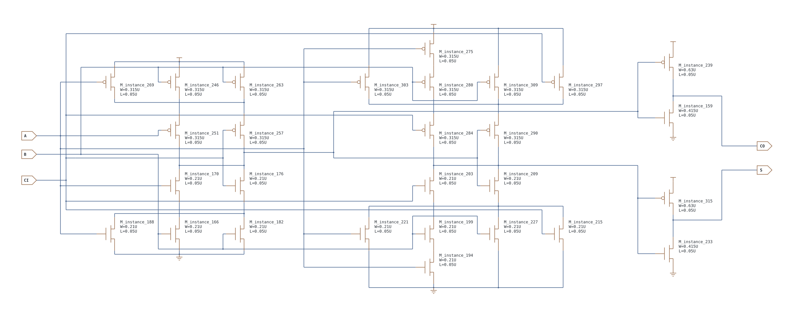

第 15 章 半加器、全加器与进位链
同样几个输入，为什么会有两个输出、两组网络和不同关键路径
15.1 算术单元：半加器与全加器
| 单元 | 输入 | 输出 | 最适合的情形 | 不能做什么 |
|---|---|---|---|---|
| HA_X1 半加器 | A、B | 和 S、进位 CO | 明确没有输入进位的最低位，或两个单比特相加 | 不能接收前一级进位 |
| FA_X1 全加器 | A、B、CI | 和 S、进位 CO | 多位加法器的中间/高位，或最低位也有外部 CI 时 | 只负责一位；多位运算仍要连接各级进位或采用更快结构 |
HA_X1
S=A⊕B，CO=A·B。
| A | B | CO | S |
|---|---|---|---|
| 0 | 0 | 0 | 0 |
| 0 | 1 | 0 | 1 |
| 1 | 0 | 0 | 1 |
| 1 | 1 | 1 | 0 |
FA_X1
S=A⊕B⊕CI，CO=A·B + CI·(A+B)；也就是三个输入中至少两个为 1 时进位。
| A | B | CI | CO | S |
|---|---|---|---|---|
| 0 | 0 | 0 | 0 | 0 |
| 0 | 0 | 1 | 0 | 1 |
| 0 | 1 | 0 | 0 | 1 |
| 0 | 1 | 1 | 1 | 0 |
| 1 | 0 | 0 | 0 | 1 |
| 1 | 0 | 1 | 1 | 0 |
| 1 | 1 | 0 | 1 | 0 |
| 1 | 1 | 1 | 1 | 1 |
怎样组成 4 位加法器
若最低位没有外部输入进位，可令 bit0 使用 HA；它的 CO 接到 bit1 FA 的 CI。bit1、bit2、bit3 依次让前一级 CO 接后一级 CI，这就是最直观的串行进位（ripple-carry）结构：
A0,B0 ── HA ── S0
└CO0──→ CI1
A1,B1 ── FA ── S1
└CO1──→ CI2
A2,B2 ── FA ── S2
└CO2──→ CI3
A3,B3 ── FA ── S3，CO3 是最高位进位数值例子：A=1011₂(11)、B=0110₂(6)。bit0 得 S0=1、CO0=0；bit1 得 S1=0、CO1=1；bit2 得 S2=0、CO2=1；bit3 得 S3=0、CO3=1，所以结果是 10001₂(17)。若系统还有外部 CI，bit0 也必须使用 FA。
| 应用 | HA/FA 在其中做什么 | 还需理解的部分 |
|---|---|---|
| 整数加法器 | 每位产生 S 和向高位传递的 CO | 串行进位面积直观，但位数增多后进位延迟累积 |
| 计数器/地址递增 | 当前值与常数 1 相加；部分位可由更简单的 XOR/AND 链实现 | 综合器可能不用显式 HA/FA，而按常量条件化简 |
| 乘法器部分积压缩 | HA/FA 把同一权重的多个比特压成和与进位 | 进位送到更高权重列，不一定像普通串行加法器逐位传播 |
| 校验和/地址计算 | 作为更大算术数据通路的基本构件 | 实际映射由目标速度、功耗、布线与库表征决定 |
{kind=link}

{kind=link}

{kind=link}

{kind=link}

15.2 从十进制的“逢十进一”换成“逢二进一”
一位二进制加法的结果可能需要两位表示：1+1=10₂，低位是和 S=0，高位是进位 CO=1。半加器 HA 没有进位输入，适合独立加两位；全加器 FA 多接一个 CI，可以把上一位传来的进位一并相加。CO 不是 S 的反相输出，二者承载不同信息。
FA 可以用整数恒等式检查：A+B+CI = S + 2·CO。例如 1+1+1=3，S=1、CO=1，右边也是 1+2=3。这个检查对每一行都成立，比背八行更能发现自己把端口抄反了。
15.3 一步一步搭两位加法器：3 + 1
| 位 | A | B | 输入进位 | 相加 | S | 输出进位 |
|---|---|---|---|---|---|---|
| 最低位 bit 0 | 1 | 1 | 0 | 1+1=2 | 0 | 1 |
| 高位 bit 1 | 1 | 0 | 1（来自 bit 0） | 1+0+1=2 | 0 | 1 |
最终结果拼接为 {CO1,S1,S0}=100₂=4。最低位可以使用 HA，高位使用 FA；若整个加法器还要接外部 CI，最低位也需要 FA。输出宽度若只保留两位，会得到 00 并丢掉最后进位，所以功能规格还必须说明溢出/截断处理。
15.4 把全加器分解后，再回到真实晶体管图
一种便于手算的逻辑分解是 P=A⊕B、G=A·B、S=P⊕CI、CO=G+P·CI。P 表示输入进位能影响本位进位的条件，G 表示本位自己产生进位。这个分解帮助理解功能，但不是说本库 FA 必须由四个独立标准门拼在一起；真实 CDL 可共享内部网络并使用复合晶体管结构。
| A/B 状态 | CO | 如何理解 |
|---|---|---|
| 00 | 0，与 CI 无关 | 本位不产生进位，CI 单独不足以凑成 2 |
| 01 或 10 | 等于 CI | 输入进位被传播 |
| 11 | 1，与 CI 无关 | 本位已经产生进位 |
读大图时先圈出 CO 输出末级，再沿它的控制节点反推；随后单独处理 S 输出，最后把共享节点合并。每次只追一张网络表：起点、经过的器件、到达的电源、需要的输入条件。这样不用同时在脑中保存整张 FA 电路。
15.5 时序与版图上要关注的对象
串接很多 FA 时，CI→CO 的传播可能跨过多位，形成长关键路径；A/B→S、CI→S、A/B→CO 也是不同弧。不能用一个“FA 延迟”代替所有情况。版图上两输出需要各自可接入的引脚，内部共享有利于面积，却也可能使某些网络更拥挤。面积、进位路径与和路径必须分别记录。
- 用两位链计算 2+1，并写每位的 CI/CO。
- FA 的 A=B=0 时切换 CI，哪个输出应变化？
- 用 A+B+CI=S+2CO 验证 101 这一行。
答案
① 10+01：低位 0+1+0 得 S0=1、CO0=0；高位 1+0+0 得 S1=1、CO1=0，结果 011。② S 跟随 CI，CO 保持 0，所以不能以 CO 不翻转判电路坏。③ 1+0+1=2，对应 S=0、CO=1。